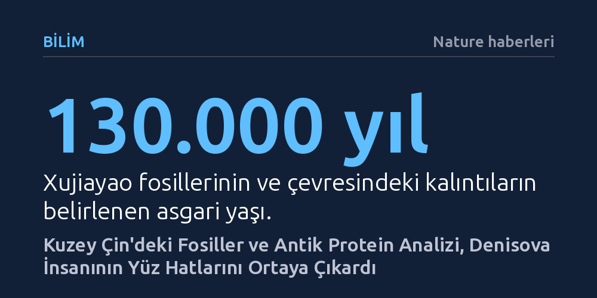

BILIM · Nature haberleri · 2026-10-22
Kuzey Çin'deki 130 bin yıllık fosiller üzerinde yapılan antik protein analizleri, Denisova insanına özgü morfolojik yüz hatlarını ilk kez netleştirdi. Bulgular; basık bir alın, kavisli kaş kemeri ve dikdörtgen göz çukurlarından oluşan belirgin bir anatomiyi kanıtlıyor.
Yıllardır yalnızca Sibirya'daki küçük bir parmak kemiğinden ibaret soyut bir 'genetik hayalet' sayılan Denisovalılar, antik protein analizleri sayesinde nihayet somut bir yüze ve Asya çapında geniş bir varlığa kavuşuyor.

Basık ve geriye doğru eğimli bir alın, arkaya doğru kavislenen masif bir kaş kemeri, dikdörtgen biçimli göz çukurları, düz yanaklar ve orta derecede belirgin bir burun köprüsü... Kuzey Çin'de bulunan fosilleşmiş kafatası parçaları, çeneler ve dişler üzerinde yapılan kapsamlı incelemeler, evrimsel tarihimizin en gizemli insan türlerinden biri olan Denisovalıların karakteristik yüz hatlarını nihayet gün ışığına çıkardı. Araştırmacılar, elde edilen bu morfolojik veriler sayesinde, daha önce yüz hatları tam olarak bilinemeyen bu kadim insanların nasıl göründüğüne dair bugüne kadarki en net tabloyu çiziyor.
Avustralya'daki Queensland Teknoloji Üniversitesi'nde görev yapan paleogenetikçi Sally Wasef, bu gelişmenin antropoloji dünyası için taşıdığı anlamı şu sözlerle özetliyor: “Nihayet Denisovalıya bir yüz kazandırmaya başlıyoruz.” Denisova insanı 2010 yılında Sibirya'daki bir mağarada bulunan minik bir parmak kemiğinden izole edilen DNA sayesinde keşfedildiğinden beri, bilim dünyasında adeta bir 'genetik hayalet' olarak biliniyordu. İnsanlık ailesinin bu gizemli üyesi, genetik dizilimiyle Neandertallerden ve Homo sapiens'ten açıkça ayrılsa da fosil kayıtlarının son derece yetersiz olması nedeniyle somut bir bedene ve yüze büründürülememişti.
Bugün yüz hatlarının çözülmesini sağlayan fosil koleksiyonu aslında yeni keşfedilmiş değil. Kuzey Çin'deki Xujiayao bölgesinde 1970'li yıllarda gün yüzüne çıkarılan bu kalıntılar, en az 130 bin yıllık bir geçmişe sahip. Antik hayvan kemikleri ve ilkel taş aletlerle bir arada bulunan 20 parçalık bu insan fosili grubu, kafatası parçalarından, çene kemiklerinden ve dişlerden oluşuyordu. Ancak keşfedildikleri dönemde bu kalıntıların insan soyağacının neresine oturduğu büyük bir tartışma konusuydu.
Dönemin antropologları, fosillerin sahip olduğu alışılmadık anatomik yapıyı mevcut tür tanımlarıyla bağdaştırmakta zorlanmış ve kalıntıları geçici olarak Homo juluensis adı verilen ayrı bir tür altında sınıflandırmıştı. On yıllar boyunca gizemini koruyan bu kemiklerin gerçekte kime ait olduğu sorusu, modern biyomoleküler arkeoloji yöntemleri devreye girene kadar yanıtsız kaldı.
Fosillerin kimliğini kesinleştiren atılım, Pekin'deki Omurgalı Paleontolojisi ve Paleoantropoloji Enstitüsü'nden genetikçi Qiaomei Fu ve ekibinin yürüttüğü titiz çalışmalarla gerçekleşti. Yüz bin yılı aşkın süre toprak altında kalan fosillerde DNA molekülleri çevresel etkenlerle parçalanıp yok olma eğilimindedir. Buna karşılık proteinler, kimyasal yapıları sayesinde DNA'ya kıyasla zamana ve ısıya çok daha uzun süre dayanabilir. Araştırmacılar bu avantajdan yararlanarak Xujiayao'daki iki kemikten peptit adı verilen küçük protein parçalarını izole etmeyi başardı.
Fu ve ekibi, elde edilen bu antik peptit dizilimlerini modern insanların ve Neandertallerin protein yapılarıyla karşılaştırdı. Yapılan inceleme sonucunda, Xujiayao kemiklerindeki birden fazla peptitte ve diğer Doğu Asya fosillerinde ortak olan tek bir kritik amino asit değişimi tespit edildi. Bu özgün amino asit değişikliği, ne modern insanlarda ne de Neandertallerde bulunuyordu; Denisova soy hattına özgü kesin bir moleküler genetik belirteçti. Böylece Xujiayao fosillerinin tartışmasız biçimde Denisovalılara ait olduğu kanıtlandı.
Bu keşif, daha önce Çin'in Harbin kenti yakınlarında bulunan ve neredeyse eksiksiz bir kafatasından oluşan kalıntılarla birleştiğinde, Denisovalıların fiziksel çeşitliliğine ve yaşam alanlarına dair çok daha geniş bir perspektif sunuyor. Kopenhag Üniversitesi'nden paleoantropolog Fabrice Demeter'in de vurguladığı üzere bulgular, Denisovalıların sadece Sibirya'nın soğuk mağaralarına sıkışmış münferit bir topluluk olmadığını, Asya'nın dört bir yanına yayılmış, coğrafi olarak geniş ve morfolojik açıdan zengin bir insan grubu olduğunu doğruluyor.
Antik protein analizi, fosil kayıtlarının sessiz kaldığı ya da DNA'nın tamamen tükendiği durumlarda insan evriminin karanlık noktalarını aydınlatabilecek güçlü bir araç olduğunu bir kez daha kanıtladı. Xujiayao bulguları, yalnızca Denisovalıların fiziksel görünüşünü netleştirmekle kalmıyor; yüz binlerce yıl önce Asya kıtasında farklı insan türlerinin nasıl bir arada yaşadığını ve evrimleştiğini anlama yolunda dev bir adımı temsil ediyor.